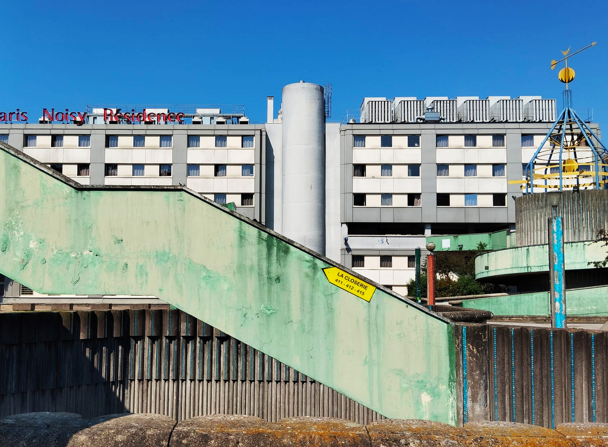
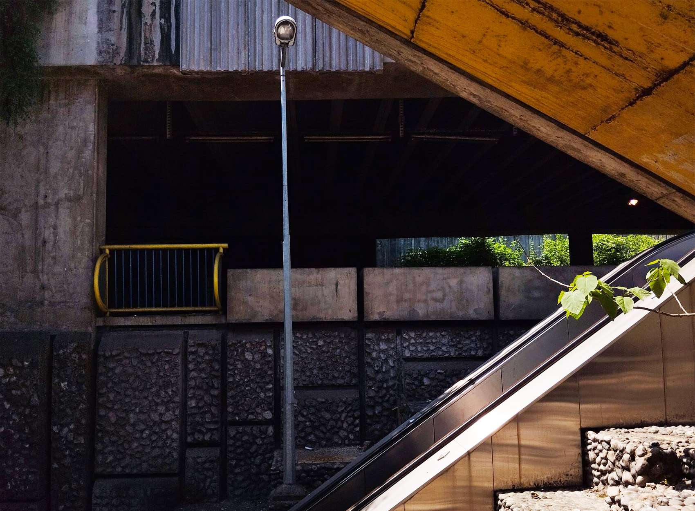
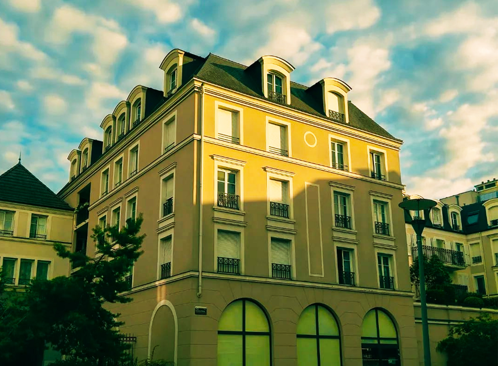
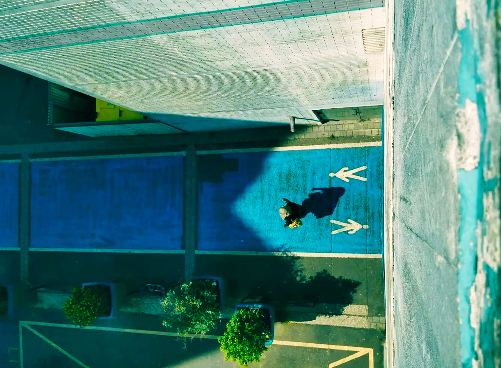
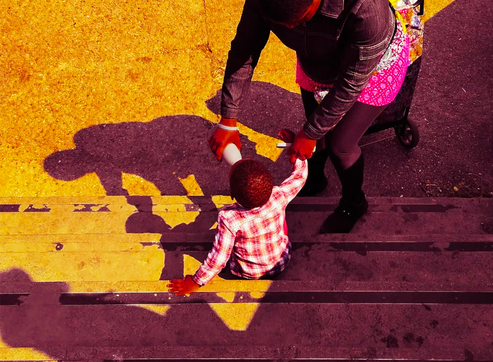

Chez Nous (93)
Mon rôle: Prise de photos, édition et photomontage.
Cette collection de photographies cherche à mettre en évidence la beauté insoupçonnée de ma ville (Noisy le grand), un quartier souvent méprisé. Son architecture et ses habitants cachent à plein vue un charme éclipsé par leur condition de précarité.




